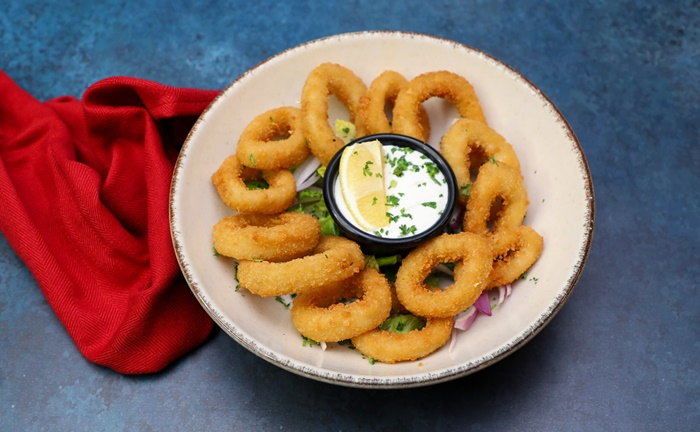
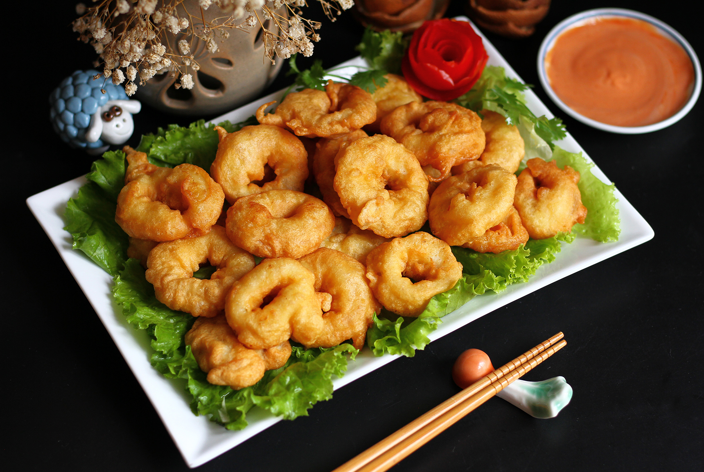

Mực Khoanh Chiên Xù Sốt Bơ Tỏi là món khai vị hoặc món ăn vặt cực kỳ hấp
dẫn, được yêu thích bởi lớp vỏ ngoài giòn rụm, vàng ươm, bên trong là
mực tươi ngọt, dai ngon, hòa quyện cùng hương thơm lừng của sốt bơ tỏi
đậm đà. Món ăn này chắc chắn sẽ làm hài lòng cả những thực khách khó
tính nhất.


Nguyên liệu
Mực tươi: 500g (chọn mực ống hoặc mực lá tươi, thân
dày, trắng trong)
Bột chiên xù: 100g (loại bột chiên xù vàng, hạt to để
tạo độ giòn rụm)
Cho mực đã cắt vào tô, ướp với 1/2 muỗng cà phê muối và 1/4 muỗng
cà phê tiêu xay. Trộn đều và để khoảng 10-15 phút cho mực thấm gia
vị.
Bước 2: Chuẩn bị bột chiên
Đập 1 quả trứng gà vào một bát sâu lòng, đánh tan đều.
Cho 50g bột mì ra một đĩa phẳng.
Cho 100g bột chiên xù ra một đĩa phẳng khác.
Bước 3: Chiên mực
Lần lượt lăn từng khoanh mực qua đĩa bột mì cho bột bám đều một
lớp mỏng. Vỗ nhẹ để loại bỏ bột thừa.
Tiếp theo, nhúng khoanh mực đã áo bột mì vào bát trứng gà đã đánh
tan, đảm bảo trứng phủ đều mực.
Cuối cùng, lăn khoanh mực qua đĩa bột chiên xù, dùng tay ấn nhẹ để
bột chiên xù bám chặt và phủ kín mực.
Làm lần lượt cho đến hết số mực.
Đặt chảo sâu lòng lên bếp, đổ khoảng 500ml dầu ăn vào. Đun nóng
dầu ở lửa vừa (khoảng 170-180°C). Để kiểm tra độ nóng của dầu, bạn
có thể thả một hạt bột chiên xù vào, nếu hạt nổi lên và sôi lăn
tăn là dầu đã đạt.
Nhẹ nhàng thả từng khoanh mực đã tẩm bột vào chảo dầu nóng. Không
chiên quá nhiều cùng một lúc để tránh làm giảm nhiệt độ dầu và làm
mực bị ỉu.
Chiên mực trên lửa vừa cho đến khi vàng giòn đều các mặt, vỏ bánh
giòn rụm và có màu vàng đẹp mắt. Thời gian chiên khoảng 2-3 phút
mỗi mẻ.
Vớt mực đã chiên ra đĩa có lót giấy thấm dầu để loại bỏ bớt dầu
thừa.
Bước 4: Làm sốt bơ tỏi
Trong một chảo sạch khác, cho 50g bơ lạt vào đun chảy trên lửa
nhỏ.
Khi bơ tan chảy, cho 3-4 tép tỏi băm nhỏ vào phi thơm cho đến khi
tỏi vàng nhẹ và dậy mùi thơm. Tránh phi tỏi quá cháy sẽ bị đắng.
Nếu muốn, bạn có thể nêm thêm một chút muối và tiêu vào sốt bơ tỏi
cho đậm đà hơn.
Cho mực đã chiên vào chảo sốt bơ tỏi, đảo nhanh tay và đều khoảng
30 giây - 1 phút để sốt bơ tỏi bám đều và thấm vào từng khoanh
mực. Không đảo quá lâu sẽ làm mực bị dai.
Bước 5: Hoàn thiện và thưởng thức
Gắp mực khoanh chiên xù sốt bơ tỏi ra đĩa.
Rắc thêm rau mùi (ngò rí) hoặc hành lá thái nhỏ lên trên để trang
trí và tăng thêm hương vị.
Món này ngon nhất khi dùng nóng. Có thể ăn kèm với tương ớt, tương
cà hoặc sốt mayonnaise.
Bình luận và Đánh giá
Đánh giá của bạn
Chưa có bình luận nào.